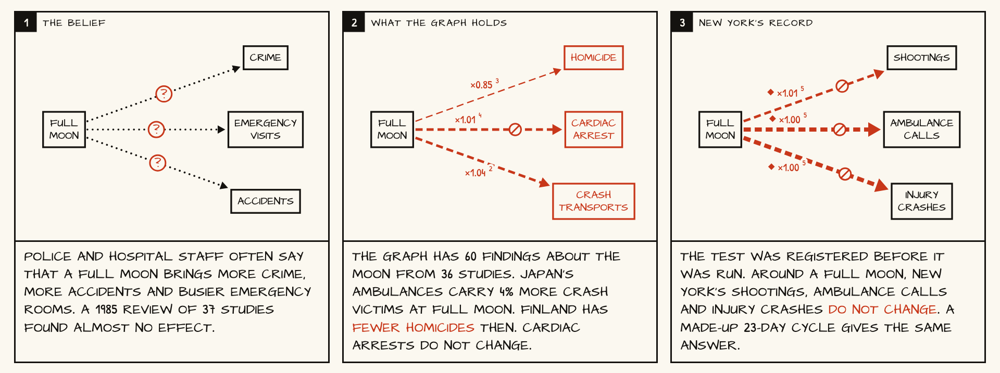

A strip for a common belief
The full moon: the graph holds studies on both sides, and New York's record is a narrow null.

A thick arrow with a struck circle is a precise estimate of no effect. A made-up 23-day cycle gives the same numbers.